Besant e Leadbeater, Formas de Pensamento (1901), fig. 12 · Paz e proteção
E se vale para o amor… vale também para
o medo
a mágoa
a raiva
“Cada homem viaja pelo espaço preso em uma jaula construída por ele mesmo, cercado por uma massa de formas criadas por seus pensamentos habituais. (…)
Até o homem aprender a ter controle completo do pensamento e do sentimento, ele não vê nada como realmente é, pois todas as suas observações devem ser feitas por esse meio, que distorce e colore tudo como óculos malfeitos.”
Besant e Leadbeater, Formas de Pensamento (1901)
Todo pensamento faz duas coisas
Vibra
Ganha corpo
Três regras dos clarividentes
amor
devoção
intelecto
raiva
egoísmo
medo
Qualidade → cor
Natureza → forma
Clareza → contorno
Segundo Besant e Leadbeater, Formas de Pensamento (1901)
No campo, elas se dividem assim
Positivas
Neutras
Negativas
Egrégoras
A pergunta não é se criamos formas.
É quais. E quantas vezes por dia.
vão achar caro
vão achar caro
vão achar caro
vão achar caro
vão achar caro
vão achar caro
vão achar caro
vão achar caro
vão achar caro
vão achar caro
vão achar caro
vão achar caro
Da forma-pensamento ao parasita
A escala de densidade
Pensamento repetido
a ideia
→
Forma-pensamento
o molde
→
Miasma
o lodo
→
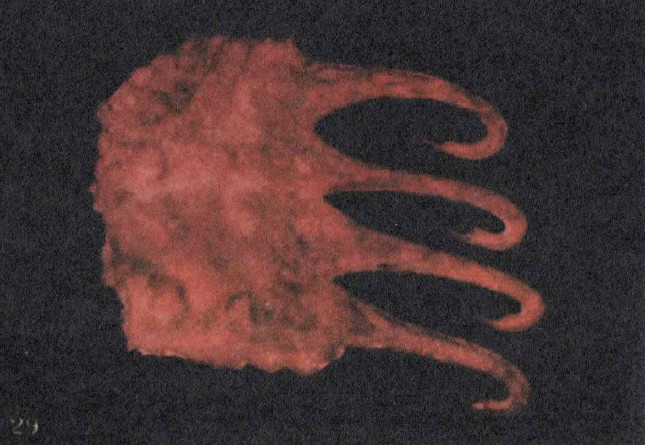
Larva astral
o parasita
1 · Forma-pensamento
O tijolo. A semente.
Vive enquanto recebe atenção.
Parou de alimentar, ela se dissolve.
2 · Miasma
O lodo.
Gruda no campo e no ambiente.
casa, móveis
peso no ar
cansaço sem motivo
3 · Larva astral
O parasita.
Nasce onde há lodo e alimento.
Pede mais do mesmo.
“Eu sei que não devia… mas faço.”
Besant e Leadbeater, Formas de Pensamento (1901), fig. 29
O ciclo
pensamento
miasma
larva
a larva pede mais pensamento e deixa mais lodo
Miasma não vira larva obrigatoriamente.
Limpo a tempo, dissolve.
Como aparece no consultório
“Vão achar caro.”
Mente · ruminação
“Saio do atendimento esgotada.”
Corpo · peso
“Sei que não devia, mas faço.”
Impulso · compulsão
A crença limitante é a forma-pensamento que a gente repetiu tantas vezes que deixou de parecer pensamento e passou a parecer verdade.
Ela não grita. Ela decide.
Uma forma-pensamento só vive enquanto alguém a alimenta.
Então: quem, dentro de você, está alimentando?
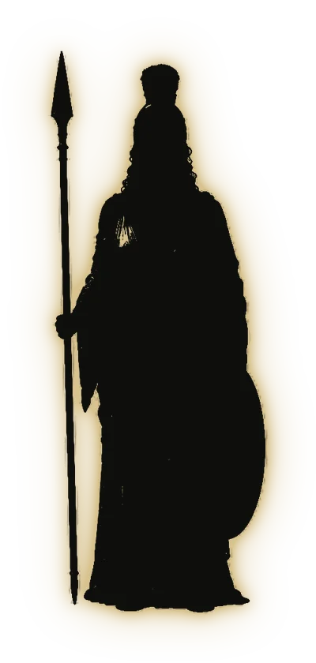
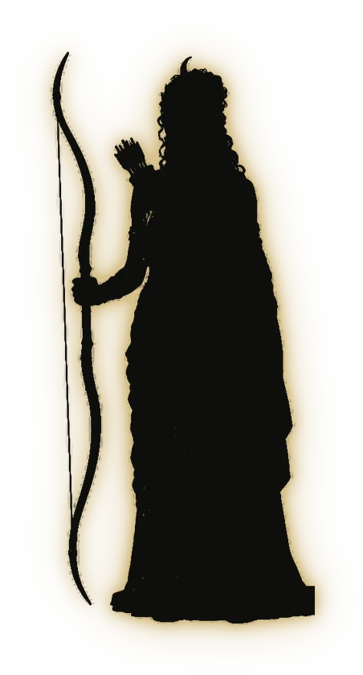
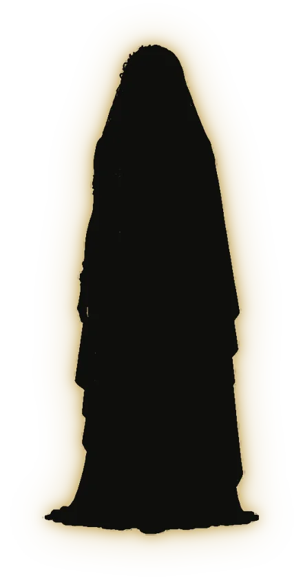
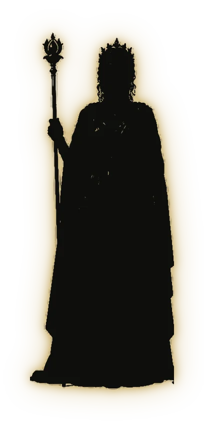
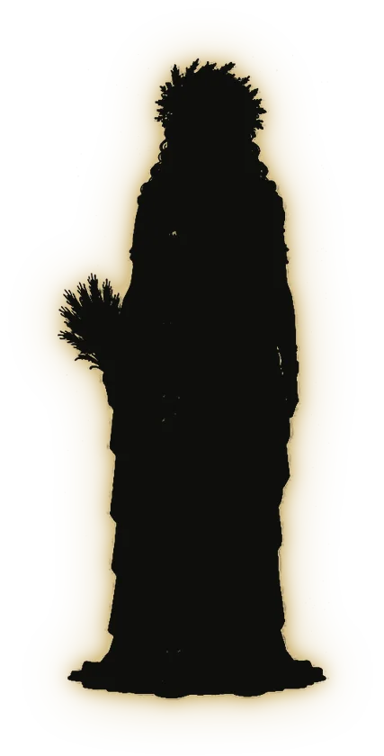
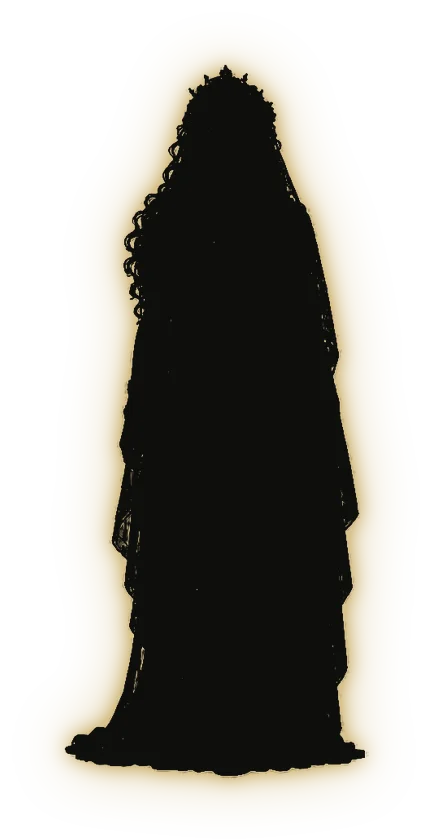
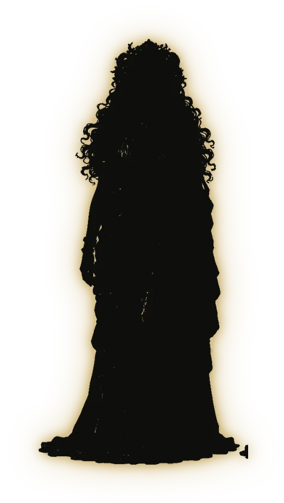
Dentro de cada mulher
Sete capacidades.
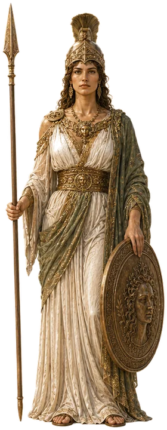
Atena
estratégia
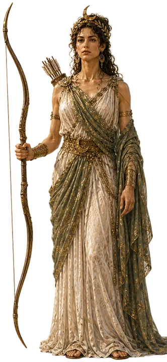
Ártemis
direção
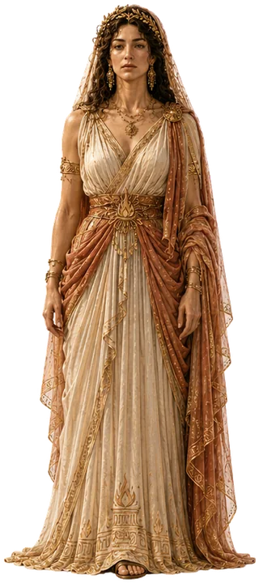
Héstia
centro
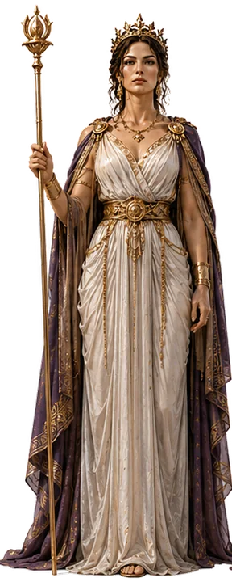
Hera
parceria
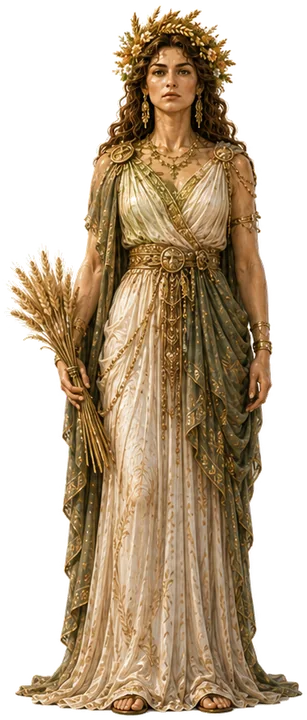
Deméter
cuidado
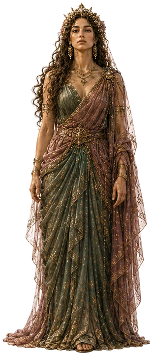
Perséfone
receptividade
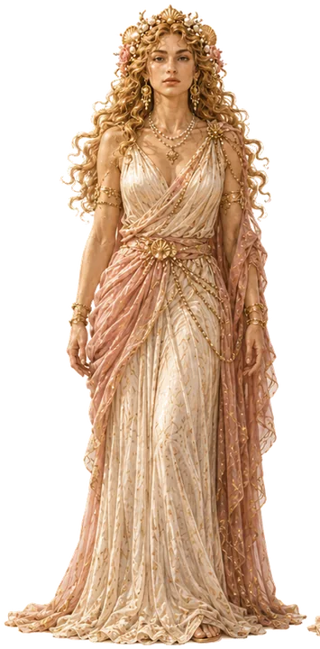
Afrodite
desejo e criação
As sete deusas: Jean Shinoda Bolen, As Deusas e a Mulher (1984)
Três modos de existir
Três eixos
Autonomia
ser inteira em si mesma
Vínculo
existir em relação
Transformação
muda o que toca
Cada capacidade pode estar
Na luz, ou na sombra
☀ na luz
● na sombra
usa e sabe pararIntegrada
pouca, mas acessívelDisponível
por excessoHiperativada
por escassezRetraída
Para nós, radiestesistas
O trabalho que não aparece.
“Será que funciona?”
“Será que vale?”
Quem não vê o resultado, duvida dele. Quem duvida do resultado, não cobra por ele.
Toda sombra protege alguma coisa.
“Isso funcionou. Vamos ver se ainda funciona.”
Uma sombra que muitas de nós conhecem
Cobrar barato protege…
…de ser cobrada pelo resultado.
Preço baixo, expectativa baixa. E a dúvida continua guardada.
As quatro dores da terapeuta
Cada dor tem uma deusa na sombra
PILAR 1
Merecimento
por excessoHéstia
PILAR 2
Limites
por excessoDeméter
PILAR 3
Autoridade
por excessoAtena
PILAR 4
Visibilidade
por escassezAfrodite
Pilar 1 · Merecimento
“Dom não se cobra.”
Héstia na sombra, por excesso
Espiritualiza para não agir.
O que ela protege
Não ser julgada. Não criar atrito.
Pilar 2 · Limites
“Se eu não fizer, ninguém faz.”
Deméter na sombra, por excesso
Cuida de todas. Ninguém cuida dela.
O que ela protege
Pertencer. Não parecer egoísta.
Pilar 3 · Autoridade
“Só mais um curso.”
Atena na sombra, por excesso
A competência virou armadura.
O que ela protege
Nunca ser pega despreparada.
Pilar 4 · Visibilidade
“Quem sou eu para aparecer?”
Afrodite na sombra, por escassez
Veste-se para desaparecer.
O que ela protege
Não ser julgada. Não ser exposta.
O biômetro e as deusas
O corpo mostra onde.
cabeça · plexo solarAtena
coraçãoHéstia
escápulasDeméter
garganta · joelhosAfrodite
A regra do eixo oposto
O excesso não se combate de frente.
Acende-se a que ficou do outro lado.
Deméter
em excesso
Ártemis
a que acende
a radiestesiaabre a janela.
o comportamentoconstrói dentro dela.
O protocolo
Três tempos
1
Medir
o biômetro
onde está, antes e depois
2
Limpar
os comandos
dissolver o que se acumulou
3
Acender
a deusa do outro lado
um comportamento, sete dias
1 · Medir
O biômetro
Para a ClaudiaEste dial é provisório. Salve a imagem do seu biômetro como assets/img/biometro.png e ela aparece aqui sozinha.
2 · Limpar
Os comandos
[comando 1]
[comando 2]
[comando 3]
Para a ClaudiaFaltam os comandos. Mande o texto e ele entra aqui, um por clique, girando com a espiral.
3 · Acender
Um comportamento. Sete dias.
1234567
“Será que vale?”
Se perguntarem o valor, então eu digo o preço inteiro e fico em silêncio.
“Será que funciona?”
Se a sessão começar, então eu peço uma nota de 0 a 10 para o incômodo dela, e repito no fim.
Primeiro a prova. Depois a crença.
Que formas você vai criar a partir de hoje?
QR da Claudia
Claudia
[o que ela oferece]
[@ da Claudia]
Yasnnajára Alves
Mapa das Sete: qual deusa está na sua sombra?
@yasnnajara_alves
Referências
Besant, A.; Leadbeater, C. W.Formas de Pensamento (Thought-Forms, 1901).
Powell, A. E.O Corpo Mental e O Corpo Astral (1927).
Hahnemann, S.As Doenças Crônicas (1828).
Xavier, F. C. (André Luiz).Missionários da Luz (1945) e Evolução em Dois Mundos (1958).
Lacerda de Azevedo, J.Espírito/Matéria: Novos Horizontes para a Medicina (1988).
Brennan, B. A.Mãos de Luz.
Bolen, J. S.As Deusas e a Mulher (1984).
Alves, Y. Método das Deusas (metodologia autoral).
Deite o celular para ver a apresentação ↻
→ avança · ← volta · F tela cheia · N notas · B tela preta